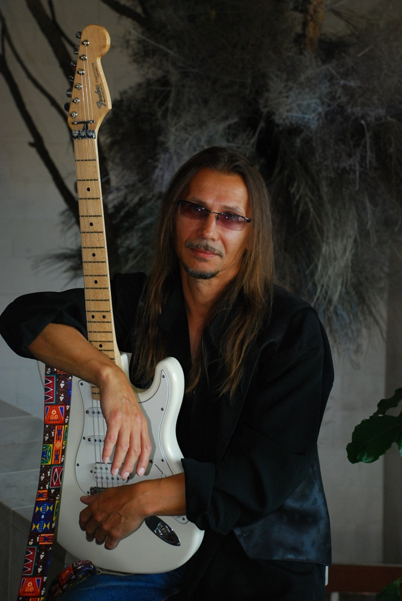

обо мне
Родился в Москве, 9 октября 1958г., и до сих пор обожаю вспоминать и, по возможности, посещать этот
некогда уютный уголок между «Чистыми прудами» и Земляным валом …
Там было детство – что еще добавишь?!...
Спасибо школе №657, «Музыкалке» №5 им. Игумнова, Дворцу пионеров и …-как я сам шучу – «Ни одно из этих
замечательных заведений, так и не исправило мою беззаботность!» …
Низкий поклон всем воспитателям!
А потом… Потом в нашу советскую «идиллию» ворвался безбашенно – чувственный Его Величество ROCK’N ROLL!
… Началось!
До Московского архитектурно - строительного я, получив в подарок от любимой тётушки свою первую
электронную гитару «Record», переиграл в таком количестве групп, что позволил себе, в конце концов,
сочинять своё… Ну, вы понимаете … Своё!...
А дальше – Армия, затем, затем ресторанная музыка, запись на старомодные носители, и т.д. и т.п….
Долг мой - передать уважением музыкантам:
Андрею Серебренникову, Андрею Гридчину, И.И. Волкову, Сергею Середенко и всем, с кем дружил и дружу ...
Что сейчас?.... Живу в добром городе Зеленограде (привет ДК, салют коллегам!) пишу песни, рисую, словом
не скучаю, не унываю, - учусь ...
Ваш Михаил Вяльшин
